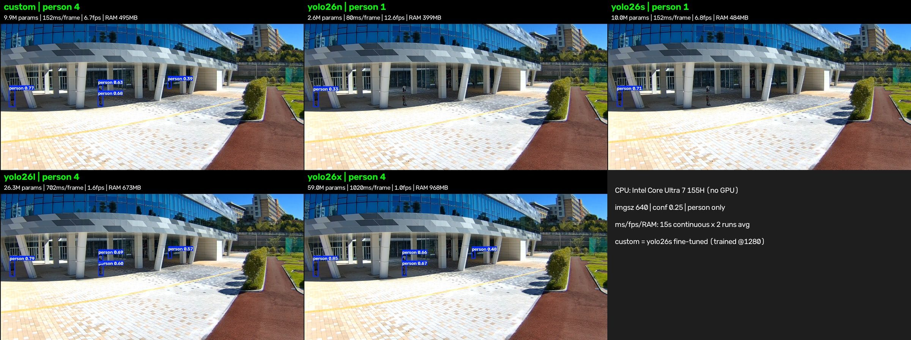
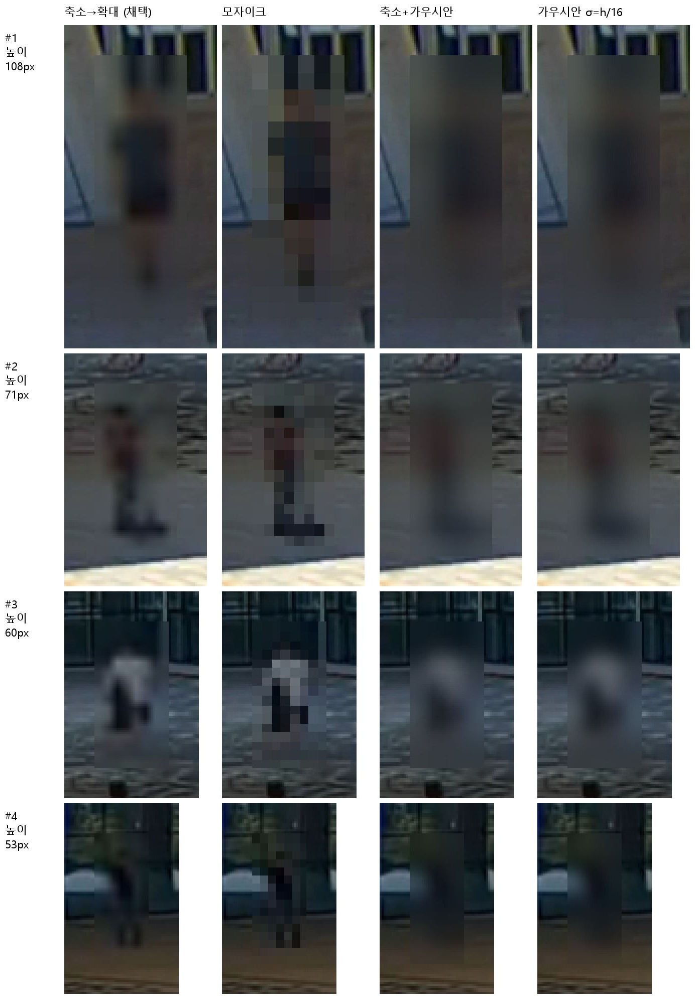

운영 결과
2026-10-31 ~ 2026-11-01, 박람회 홈페이지 실시간 혼잡도 서비스
3,000+
서비스 대상
방문객, 부스 운영진, 행사 관리진
10초
갱신 주기
CCTV 1대당, 주기마다 프레임 5장 캡처
1대
실행 환경
노트북 1대로 여러 대의 CCTV 처리
0회
서비스 중단
운영 기간 동안 중단 없이 제공
| CCTV 영상 해상도 | 가로 640픽셀 |
|---|---|
| 개인정보 보호 | 원본 영상은 저장하거나 전송하지 않으며, 블러 처리한 이미지만 외부에 제공 |
| 담당 범위 | 영상 수신 → 캡처 → 인원 추정 → 혼잡도 산출 → 블러 처리 → 웹 서버 전달 |
시스템 구조
실시간 스트림 대신 10초 주기 배치 처리로 노트북 1대에서 여러 CCTV를 처리합니다.
CCTV ×N (RTSP)→캡처 (3초간 5장)→사람 검출 (YolPe)→구역 집계 (발 위치 → ROI)→혼잡도 판정 (중앙값 · EMA · 히스테리시스)→Redis→웹 서버
중앙값 집계
프레임 5장의 인원 중 중앙값을 사용하여 일시적인 가림과 오검출의 영향을 줄입니다.
신뢰도
5장 사이의 인원 편차가 크면 해당 주기의 결과를 버리고 직전 값을 유지합니다.
EMA 스무딩
최근 3~5주기의 결과를 지수이동평균으로 반영합니다.
히스테리시스 판정
상승·하강 임계값을 분리하여 경계 부근에서 단계가 반복적으로 바뀌는 현상을 막습니다.
검출 모델: YolPe
YOLO26s를 군중 데이터셋 CrowdHuman으로 파인튜닝한 사람(person) 1개 클래스 검출 모델
3.5배
원거리 인식률 향상
22.5% → 79.8% (박스 높이 48px 미만)
5.3배
더 작은 사람까지 인식
최소 인식 크기 128px → 24px
4배
현장 검출 인원
같은 크기 기본 YOLO26s 1명 → 4명
6.7배
더 빠른 속도
같은 결과를 낸 YOLO26x 대비
파인튜닝이 필요한 이유
- CCTV는 높은 위치에서 넓은 범위를 촬영하므로, 멀리 있는 사람은 화면에서 수십 픽셀 크기로 작게 보입니다.
- COCO로 학습된 기본 모델은 이러한 작은 사람을 많이 놓치며, 그 결과 인원이 실제보다 적게 계산됩니다.
- 머리만 검출하는 방식은 원거리에서 검출이 어렵고 둥근 물체를 오검출하여,
person1개 클래스 방식을 채택하였습니다.
성능 평가
1. 거리별 인식률: 기본 YOLO26s vs YolPe
측정 조건: CrowdHuman 검증 데이터(입력 크기 1280, conf 0.35), 몸의 75% 이상이 보이는 사람 48,204명 기준 recall
| 거리 | 박스 높이 | 사람 수 | 기본 YOLO26s | YolPe | 배수 |
|---|---|---|---|---|---|
| 원거리 | 48px 미만 | 5,535 | 0.225 | 0.798 | 3.5배 |
| 중거리 | 48~128px | 14,966 | 0.559 | 0.930 | 1.7배 |
| 근거리 | 128px 이상 | 27,703 | 0.852 | 0.969 | 1.1배 |
| 전체 | 48,204 | 0.689 | 0.938 | 1.4배 | |
| 최소 인식 크기 | 인식률 0.7 이상 | 128px | 24px | 5.3배 작은 사람까지 |
2. 현장 영상 비교: YOLO26 모델 크기별

| 모델 | 파라미터 수 | 검출 인원 | 처리 시간 | 처리 속도 | 메모리 |
|---|---|---|---|---|---|
| YolPe (custom) | 9.9M | 4명 | 152ms | 6.7fps | 495MB |
| YOLO26n | 2.6M | 1명 | 80ms | 12.6fps | 399MB |
| YOLO26s | 10.0M | 1명 | 152ms | 6.8fps | 484MB |
| YOLO26l | 26.3M | 4명 | 702ms | 1.6fps | 673MB |
| YOLO26x | 59.0M | 4명 | 1020ms | 1.0fps | 968MB |
핵심 성과: 같은 크기의 기본 YOLO26s보다 4배 많은 사람을 같은 속도로 검출하였습니다. 가장 큰 YOLO26x와 같은 수의 사람을 약 6.7배 빠른 속도, 약 6.0배 적은 파라미터로 검출하였습니다.
3. 오탐률 및 미검출률 (오분류표)
현장 실측이 아닌 CrowdHuman 검증 데이터셋 기준입니다. best.pt(37 에폭), 이미지 4,370장, 정답 사람 99,481명
| 예측 \ 정답 | person (사람) | background (사람 아님) |
|---|---|---|
| person (사람으로 검출) | 90,936 (올바른 검출, TP) | 10,132 (오탐, FP) |
| background (검출 안 됨) | 8,545 (미검출, FN) | - |
91.4%
재현율 (Recall)
실제 사람 100명 중 약 91명 검출
90.0%
정밀도 (Precision)
검출 100개 중 약 90개가 실제 사람
약 10.0%
오탐률
10,132 / 101,068
약 8.6%
미검출률
8,545 / 99,481
개인정보 보호
- 원본 프레임은 디스크, 로그, 네트워크 어디에도 남기지 않으며, 블러 처리 후 메모리에서 즉시 삭제합니다.
- 사람 박스를 긴 변 16픽셀로 축소한 뒤 다시 확대하여, 얼굴이 약 2픽셀 크기로 줄어들어 복원할 수 없게 합니다.
- 블러 후 박스별 선명도를 검사하여, 통과하지 못하면 이미지는 전송하지 않고 혼잡도 수치만 전송합니다.
블러 방식 비교

한계
- 많이 가려진 사람은 검출하지 못할 수 있어, 밀집된 군중에서는 인원이 실제보다 적게 계산될 수 있습니다.
- 16픽셀보다 작은 사람은 대부분 검출하지 못합니다.
- 포스터 속 인물이나 마네킹처럼 사람과 비슷한 물체를 사람으로 검출할 수 있습니다.